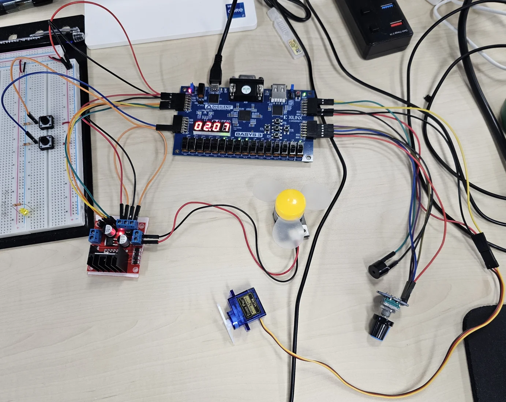
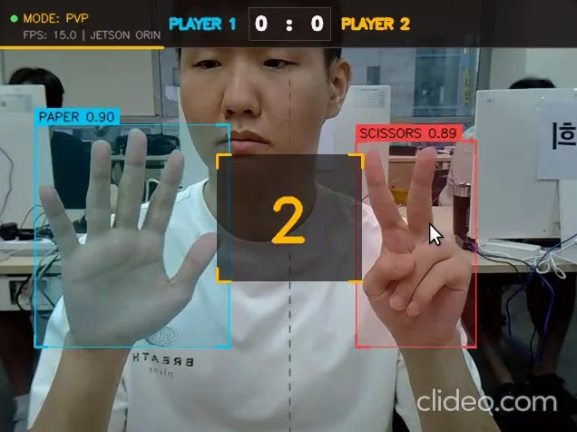
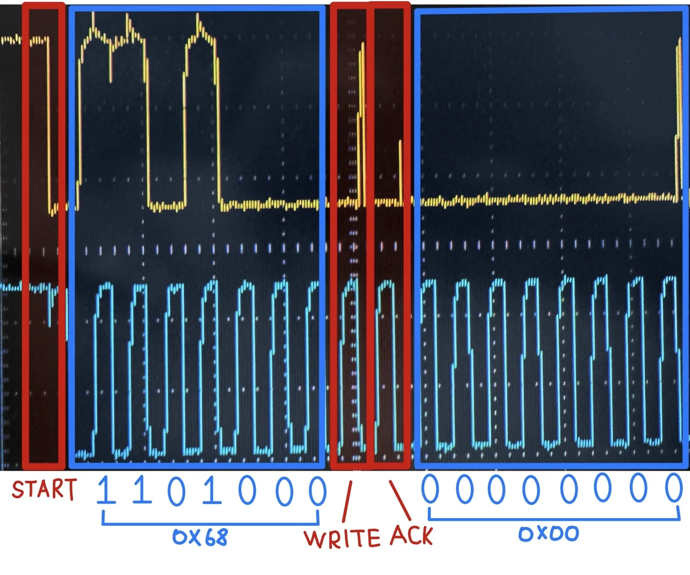
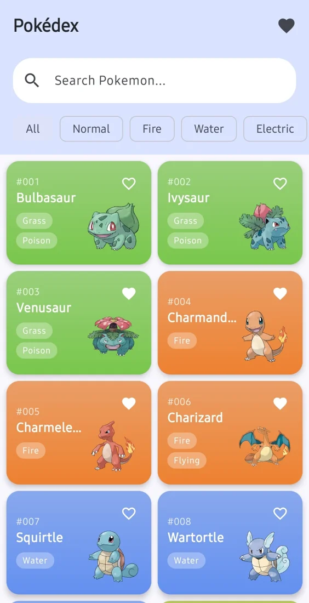

지아이티 GIT
SW개발1팀 · 연구원
2022.01 — 2024.02
차량 진단 애플리케이션 · 장비 통신
- Java/Kotlin 기반 Android 차량 진단 기능과 CAN·Ethernet 통신 모듈, 보안 제어기 데이터 위변조 검증 기능 개발
- 외부 센서·알고리즘을 연동한 소음 기반 진단 기능과 점검 결과 전송 기능 구현
- 국내·북미·유럽·중국 출시 및 브랜드별 빌드 대응. Hilt·Jetpack Compose 사내 세미나 진행
차량 진단과 센서 데이터 통신을 다룬 약 3년의 실무 경험.
MCU·Linux 제어 프로젝트로 장치에 대한 이해를 넓히고 있습니다.
김호철 임베디드 · 시스템 SW 개발자

Linux 응용 SW와 Android에서 장치의 데이터를 사용자 기능으로 연결했습니다.
SW개발1팀 · 연구원
2022.01 — 2024.02
영상보안개발팀 · 사원
2020.08 — 2021.08
실무 이후의 교육·프로젝트 경험입니다. 개인 구현과 팀 기여, 검증 결과와 남은 조건을 함께 정리했습니다.
Jetson Smart Fan Controller
본인 역할 · Kernel Driver, 제어 앱, 센서 IPC 및 검증 구현
정상 동작과 오류·종료 경로의 소프트웨어 회귀 검증 기록
Jetson Smart Fan Controller 상세 보기 →
Smart Recycling Edge AI
본인 역할 · 전체 SW 아키텍처·통신 통합, 추론 파이프라인·Qt·정산 구현
5개 서브시스템의 통합 시연과 최종 결과보고서 공개
Smart Recycling Edge AI 상세 보기 →
Smart Monitoring System
본인 역할 · STM32 펌웨어, Qt 관제 서버, Android 앱 구현·연동
자동 차단·모바일·현장 스위치·Qt 제어 통합 시연 공개
Smart Monitoring System 상세 보기 →
Verilog · FSM · PWM · 테스트벤치
시간 제어·도어 서보·모터 PWM·조작 잠금을 통합한 전자레인지 제어 모형. 동시 입력과 상태 전환의 경계 조건을 검증했습니다. 테스트벤치 16개 PASS 기록이 있으며, 가열 장치 없이 도어 위치는 명령·시간으로 추정합니다.
저장소 · 설계와 검증 ↗
Python · TensorRT · CUDA · OpenCV
Jetson에서 YOLO11·TensorRT로 손 제스처를 인식하는 가위바위보. 추론 입출력 버퍼를 사전 할당·재사용하고 10프레임 판정을 게임 FSM에 연결했습니다. 게임 로직 테스트 9개 PASS. 실행에는 별도 모델 엔진이 필요합니다.
저장소 · 설계와 검증 ↗
C · I²C · 오실로스코프
DS1307 통신과 재귀 하향 수식 파서. SDA·SCL 계측에서 주소와 ACK/NACK을 해석했습니다. 파형과 현재 펌웨어의 버전 대응은 재확인이 필요합니다.
저장소 · 설계와 검증 ↗
Kotlin · MVI · Room
Paging3와 Room을 연결한 로컬 캐시, 단방향 상태 관리, 계층별 테스트를 구성한 Android 앱입니다.
저장소 · 설계와 검증 ↗Java · Kotlin · Linux · CAN · Ethernet · Bluetooth
지아이티 차량 진단 / 브이유텍 센서·중계기 실무
C · C++ · STM32 · AVR · ioctl · IPC
스마트 선풍기 / 모니터링 / RTC·계산기 프로젝트
Qt · Python · TensorRT · FastAPI · Android
재활용 키오스크 / 모니터링 / TensorRPS / PokeDex 프로젝트
Verilog · FSM · 테스트벤치 · Vivado
FPGA Microwave Oven 학습 프로젝트
대한상공회의소 서울인력개발원
2026.05.27 — 2026.12.16 · 교육 중
MCU·통신, Linux 시스템·드라이버, Qt, Edge AI, FPGA·Verilog 실습
장안대학교 인터넷정보통신과 · 3년제
2015.03 — 2021.02 · 졸업
학점 3.95 / 4.5
자격 · 어학
정보처리산업기사 · 네트워크관리사 2급 · JLPT N1